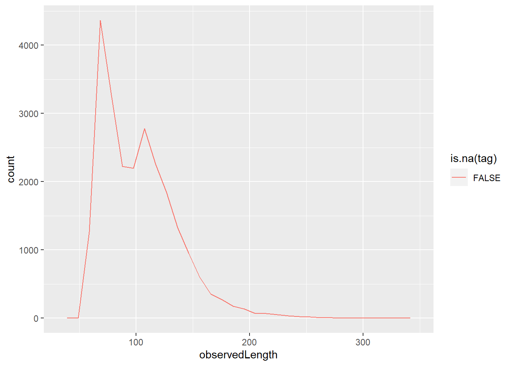
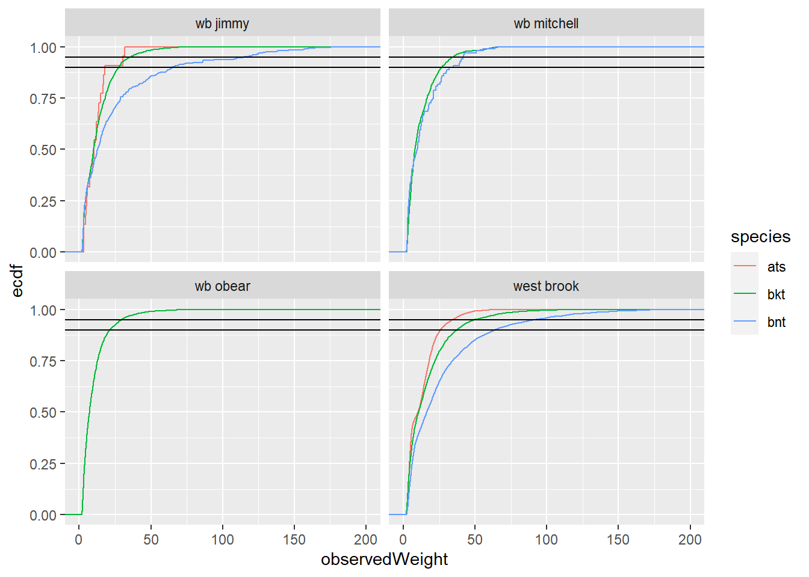

Code
# ---
# sidebar:
# pinned: true
# tools:
# - icon: save
# menu:
# - text: Data CSV
# url: "data/outForDownload/cdWB_electro.csv"
# ---# ---
# sidebar:
# pinned: true
# tools:
# - icon: save
# menu:
# - text: Data CSV
# url: "data/outForDownload/cdWB_electro.csv"
# ---Data are generated in R/getDataElectro-targets.R file
Show variables in the dataframe
cdWB_electro <- tar_read(cdWB_electro_target)
str(cdWB_electro)tibble [24,304 × 88] (S3: tbl_df/tbl/data.frame)
$ tag : chr [1:24304] "00088cbed4" "00088cbed6" "00088cbed7" "00088cbed8" ...
$ detectionDate : POSIXct[1:24304], format: "2013-03-29 14:08:00" "2012-06-08 18:21:00" ...
$ sampleName : chr [1:24304] "84" "81" "90" "84" ...
$ sampleNumber : num [1:24304] 73 70 79 73 71 72 78 71 72 73 ...
$ river : chr [1:24304] "west brook" "west brook" "wb obear" "west brook" ...
$ section : num [1:24304] 40 25 3 24 8 6 60 5 5 5 ...
$ area : chr [1:24304] "inside" "inside" "trib" "inside" ...
$ observedLength : num [1:24304] 109 113 70 108 61 63 126 70 80 86 ...
$ survey : chr [1:24304] "shock" "shock" "shock" "shock" ...
$ pass : num [1:24304] 1 1 1 1 1 1 1 1 1 1 ...
$ observedWeight : num [1:24304] 12.6 15.5 3.5 12.7 2.4 2.4 23.2 4.6 4.9 6.3 ...
$ comments : chr [1:24304] NA NA NA NA ...
$ cohort : num [1:24304] 2012 2011 2014 2012 2012 ...
$ species : chr [1:24304] "bkt" "bnt" "bkt" "bnt" ...
$ dateEmigrated : Date[1:24304], format: NA NA ...
$ sex : chr [1:24304] NA NA NA NA ...
$ year : num [1:24304] 2013 2012 2014 2013 2012 ...
$ season : num [1:24304] 1 2 3 1 3 4 2 3 4 1 ...
$ proportionSampled : num [1:24304] 1 1 1 1 1 1 1 1 1 1 ...
$ lagDetectionDate : POSIXct[1:24304], format: "2013-06-25 18:51:00" "2012-09-27 16:50:00" ...
$ meanTemperature : num [1:24304] 10.7 16.5 8.55 10.2 7.85 ...
$ meanFlow : num [1:24304] 0.5247 0.0338 0.1334 0.5389 0.1188 ...
$ meanFlowByRiver : num [1:24304] 0.5983 0.1351 0.0113 0.6055 0.0112 ...
$ meanFlowByArea_flowExt : num [1:24304] 0.52466 0.03385 0.00794 0.53889 0.00707 ...
$ meanFlowByArea_ByRiver : num [1:24304] 0.5983 0.1351 0.0156 0.6055 0.014 ...
$ sdFlow : num [1:24304] 0.58 0.181 0.222 0.6 0.175 ...
$ sdFlowByRiver : num [1:24304] 0.44667 0.07666 0.00914 0.46247 0.00594 ...
$ sdFlowByArea_flowExt : num [1:24304] 0.5796 0.181 0.0132 0.5996 0.0104 ...
$ sdFlowByArea_ByRiver : num [1:24304] 0.4467 0.0767 0.0119 0.4625 0.0066 ...
$ propBelowLoFlowThreshByRiver : num [1:24304] 0 0 0.0921 0 0 ...
$ propAboveHiFlowThreshByRiver : num [1:24304] 0.1477 0 0.0263 0.1111 0 ...
$ propBelowLoFlowThreshByArea_flowExt : num [1:24304] 0.0795 0.0901 0.1842 0.0864 0.0602 ...
$ propAboveHiFlowThreshByArea_flowExt : num [1:24304] 0.1364 0.018 0.0132 0.1111 0.0241 ...
$ riverOrdered : Ord.factor w/ 4 levels "west brook"<"wb jimmy"<..: 1 1 4 1 4 4 1 4 4 4 ...
$ readerId : logi [1:24304] NA NA NA NA NA NA ...
$ sectionN : num [1:24304] 40 25 3 24 8 6 60 5 5 5 ...
$ aliveOrDead : chr [1:24304] "alive" "alive" "alive" "alive" ...
$ instance : logi [1:24304] NA NA NA NA NA NA ...
$ quarter : logi [1:24304] NA NA NA NA NA NA ...
$ leftOrRight : logi [1:24304] NA NA NA NA NA NA ...
$ habitat : logi [1:24304] NA NA NA NA NA NA ...
$ cover : logi [1:24304] NA NA NA NA NA NA ...
$ justification : logi [1:24304] NA NA NA NA NA NA ...
$ sectionWQuarter : logi [1:24304] NA NA NA NA NA NA ...
$ j : logi [1:24304] NA NA NA NA NA NA ...
$ date : Date[1:24304], format: "2013-03-29" "2012-06-08" ...
$ dummy : num [1:24304] 1 1 1 1 1 1 1 1 1 1 ...
$ sectionOriginal : chr [1:24304] "40" "25" "3" "24" ...
$ inside : logi [1:24304] TRUE TRUE TRUE TRUE TRUE TRUE ...
$ yday : num [1:24304] 88 160 260 87 265 347 170 264 347 84 ...
$ ageInSamples : num [1:24304] 3 4 1 3 1 2 4 1 2 3 ...
$ isYOY : logi [1:24304] TRUE FALSE TRUE TRUE TRUE TRUE ...
$ lagSection : num [1:24304] 44 32 3 24 6 6 37 5 5 5 ...
$ distMoved : num [1:24304] -4 -7 0 0 2 0 23 0 0 0 ...
$ lagObservedWeight : num [1:24304] 41.3 18.3 4.8 38.8 2.4 2.3 22.8 4.9 6.3 18.2 ...
$ lagObservedLength : num [1:24304] 154 120 74 150 63 67 130 80 86 117 ...
$ lagSampleNumber : num [1:24304] 74 71 80 74 72 73 79 72 73 74 ...
$ sampleNumberDiff : num [1:24304] 1 1 1 1 1 1 1 1 1 1 ...
$ grWeight : num [1:24304] 0.01346 0.0015 0.00421 0.0138 0 ...
$ grLength : num [1:24304] 0.5102 0.0631 0.0533 0.5188 0.0244 ...
$ minSample : num [1:24304] 73 70 79 71 71 71 78 71 71 71 ...
$ maxSample : num [1:24304] 74 73 80 74 73 73 79 74 74 74 ...
$ minYear : num [1:24304] 1997 1997 1997 1997 1997 ...
$ moveDir : num [1:24304] -1 -1 0 0 1 0 1 0 0 0 ...
$ sampleInterval : num [1:24304] 88.2 110.9 75 81 82 ...
$ drainage : chr [1:24304] "west" "west" "west" "west" ...
$ quarter_length : num [1:24304] 5.03 4.75 4.95 5.28 5.25 ...
$ river_meter : num [1:24304] 5208 4903 5164 4883 5272 ...
$ confluence_river_meter : num [1:24304] 0 0 5114 0 5114 ...
$ riverMeter : num [1:24304] 5208 4903 5164 4883 5272 ...
$ nPasses : num [1:24304] 1 2 1 1 1 1 2 1 1 1 ...
$ wGR_Slope : num [1:24304] -0.367 -0.278 -0.347 -0.369 -0.347 ...
$ grWeightS : num [1:24304] 0.004307 0.000683 0.002583 0.004426 0 ...
$ lw_intercept : num [1:24304] -5.1 -5.02 -5.1 -5.02 -5.1 ...
$ lw_slope : num [1:24304] 3.06 3.03 3.06 3.03 3.06 ...
$ cf : num [1:24304] 0.0973 0.1074 0.102 0.1008 0.1057 ...
$ relCF : num [1:24304] 0.0724 0.0933 0.0781 0.0877 0.0816 ...
$ nPerInd : int [1:24304] 1 1 1 1 2 2 1 3 3 3 ...
$ meanTemperatureScaledBySeason : num [1:24304] 0.2894 0.7778 0.2953 -0.0353 -0.2434 ...
$ meanFlowScaledBySeason : num [1:24304] 0.621 -0.646 -0.401 0.711 -0.477 ...
$ meanFlowByRiverScaledBySeason : num [1:24304] 1.17 -0.16 -1.1 1.2 -1.1 ...
$ meanFlowByArea_flowExtScaledBySeason : num [1:24304] 0.853 -0.461 -0.823 0.919 -0.829 ...
$ meanFlowByArea_ByRiverScaledBySeason : num [1:24304] 1.17 -0.16 -1.07 1.2 -1.08 ...
$ meanTemperatureScaledBySeasonRiver : num [1:24304] 0.2615 0.8071 0.374 -0.0572 -0.0622 ...
$ meanFlowScaledBySeasonRiver : num [1:24304] 0.607 -0.6 -0.631 0.697 -0.693 ...
$ meanFlowByRiverScaledBySeasonRiver : num [1:24304] 0.999 -0.48 -0.522 1.04 -0.531 ...
$ meanFlowByArea_flowExtScaledBySeasonRiver: num [1:24304] 0.607 -0.6 -0.631 0.697 -0.693 ...
$ meanFlowByArea_ByRiverScaledBySeasonRiver: num [1:24304] 0.999 -0.48 -0.461 1.04 -0.595 ...# Save csv for downloading
#write.csv(cdWB_electro, file = "C:/Users/bletcher/OneDrive - DOI/projects/wbBook_quarto_targets/data/outForDownload/cdWB_electro.csv")
# Save rData file for downloading
# save(cdWB_electro, file = "C:/Users/bletcher/OneDrive - DOI/projects/wbBook_quarto_targets/data/outForDownload/cdWB_electro.RData")What are the counts by species for tagged fish?
# # off tagged individuals/species
tagged <- cdWB_electro %>%
group_by(tag, species)
tagged %>%
summarize(n = n()) %>%
group_by(species) %>%
summarize(n = n())# A tibble: 3 × 2
species n
<chr> <int>
1 ats 4541
2 bkt 5786
3 bnt 2795What are the counts by species for untagged fish?
#####
untagged <- cdWB_electro %>%
filter(is.na(tag))
untagged %>%
group_by(species) %>%
summarize(n = n())# A tibble: 0 × 2
# ℹ 2 variables: species <chr>, n <int>Plot length distributions of tagged and untagged fish
######
cdWB_electro %>%
ggplot(aes(observedLength, color = is.na(tag))) +
geom_freqpoly() 
Show comments related to mortalities
cdWB_electro %>%
group_by(comments) %>%
summarize(n = n()) %>%
arrange(desc(n)) %>%
filter(str_detect(comments, "mort")) %>%
print(n = 50)# A tibble: 1 × 2
comments n
<chr> <int>
1 shock scars/mort 3ggplot(cdWB_electro, aes(observedLength, observedWeight, color = species)) +
geom_point(size = 0.75, alpha = 0.1) +
scale_x_log10("Length (mm)") +
scale_y_log10("Mass (mg)") +
# theme_publication() +
facet_wrap(~ species)
ggplot(cdWB_electro |> filter(!is.na(observedWeight)), aes(observedWeight, color = species)) +
stat_ecdf(pad = TRUE) +
lims(x = c(0,200)) +
geom_hline(yintercept = c(0.9, 0.95)) +
facet_wrap(~river)

ggplot(cdWB_electro |> filter(!is.na(observedWeight)), aes(observedWeight, color = species)) +
stat_ecdf(pad = TRUE) +
lims(x = c(0,200)) +
geom_hline(yintercept = c(0.9, 0.95)) +
facet_wrap(~river)
Simple linear regression statistics
lwReg <- cdWB_electro %>%
nest_by(species) %>%
mutate(reg = list(lm(log(observedWeight) ~ log(observedLength), data = data)))
lwReg %>% summarise(broom::tidy(reg)) # A tibble: 6 × 6
# Groups: species [3]
species term estimate std.error statistic p.value
<chr> <chr> <dbl> <dbl> <dbl> <dbl>
1 ats (Intercept) -11.4 0.00942 -1210. 0
2 ats log(observedLength) 3.00 0.00208 1442. 0
3 bkt (Intercept) -11.5 0.00621 -1859. 0
4 bkt log(observedLength) 3.02 0.00140 2155. 0
5 bnt (Intercept) -11.5 0.00686 -1670. 0
6 bnt log(observedLength) 3.01 0.00149 2023. 0lwReg %>% summarise(broom::glance(reg))# A tibble: 3 × 13
# Groups: species [3]
species r.squared adj.r.…¹ sigma stati…² p.value df logLik AIC BIC
<chr> <dbl> <dbl> <dbl> <dbl> <dbl> <dbl> <dbl> <dbl> <dbl>
1 ats 0.989 0.989 0.0945 2.08e6 0 1 22663. -45319. -45295.
2 bkt 0.991 0.991 0.112 4.64e6 0 1 32555. -65105. -65079.
3 bnt 0.996 0.996 0.0858 4.09e6 0 1 18345. -36683. -36660.
# … with 3 more variables: deviance <dbl>, df.residual <int>, nobs <int>, and
# abbreviated variable names ¹adj.r.squared, ²statistictag PIT tag number, unique identifier, character
cohort year the fish was born, assigned based on size at initial capture and size distributions of fish of known age
detectionDate mostly self explanatory, but filled in for unobserved fish as the median capture date for all observed fish.
sampleName An ordered identifier for sampling mostly for recognition by people who did the sampling. This is not very clean because early in the study samples were not taken at strictly seasonal intervals. sampleNumber is probably more useful and intuitive.
sampleNumber A tidier identifier for samples that strictly increases by one for each season (4/yr)
river River the fish was observed in. NA if the fish was not observed.
west brook The mainstem
wb jimmy Larger tributary that fish can move back and forth into from WB section 31 (Open Large from Letcher et al 2015)
wb mitchell Smaller tributary that fish can move back and forth into from WB section 35 (Open Small from Letcher et al 2015)
wb obear Smaller tributary that has a waterfall at its mouth, so fish can only move downstream into WB section 20 (Isolated Small from Letcher et al 2015)
section Identifier for the 20m section that the fish was captured in. This is ordered from downstream to upstream starting at 1 within each river.
area inside = section 1:47 in the west brook, trib = tributary (not west brook), below = sections below inside sections, above = sections above the inside sections
observedLength in mm
survey shock = electroshocking survey
pass electrofishing pass. 1 or 2 in the west brook (inside), 1 in tribs
observedWeight in g wet weight
species
bkt = brook trout (native, self-sustained population)
bnt = brown trout (non-native, self-sustained population)
ats = atlantic salmon (stocked through 2005, no reproduction)
dateEmigrated date of emigration from inside/tribs if observed to emigrate. Coded as emigrated if last observation was on PIT antenna or captured below or above
sex NA = unknown, f = female, m = male, p = precocious male (salmon only)
enc
Logical, was the fish observed? (1 = yes, 0 = no)
ageInSamples number of seasons since summer of the year of birth (1st summer = 0)
sampleIndex sampleNumber rescaled to start at 1 and end at length(unique(sampleNumber)) for ease of looping in JAGS
tagIndex ordered, unique individual identifier 1:N
year of sample
season 1 = spring, 2 = summer, 3 = fall, 4 = winter
proportionSampled Occasionally the sample was not complete (e.g., skipped west brook but did the tributaries). This is the proportion of sections in the river of capture that were sampled.
lagDetectionDate detection date lagged back one observation
meanTemperature mean temperature between observation dates. If individual was not observed, median observation date for the sampling occasion was used.
meanFlow mean flow between observation dates. If individual was not observed, median observation date for the sampling occasion was used.
knownZ z is alive state, so this is ‘1’ between first and last capture, and NA otherwise, unless the fish was known to be dead (e.g. tagging mortality or observed dead) in which case the value is set to ‘2’. There is also an option in the addKnownZ() function to useAntenna. This is useAntenna = FALSE by default, but could be set to TRUE to set knownZ to 1 up to the last antenna observation.